<!--

    Copyright © 2017 The Blocky Authors

    Licensed under the Apache License, Version 2.0 (the "License");
    you may not use this file except in compliance with the License.
    You may obtain a copy of the License at

        http://www.apache.org/licenses/LICENSE-2.0

    Unless required by applicable law or agreed to in writing, software
    distributed under the License is distributed on an "AS IS" BASIS,
    WITHOUT WARRANTIES OR CONDITIONS OF ANY KIND, either express or implied.
    See the License for the specific language governing permissions and
    limitations under the License.

-->
<div layout="row" id="examples" flex>
    <md-sidenav md-is-locked-open="vm.isSidenavOpen && $mdMedia('gt-xs')" id="examples-list" class="md-whiteframe-4dp md-sidenav-left"
        md-component-id="examples-list">
        <md-list>
            <md-list-item ng-repeat="example in vm.examples">
                <md-button ng-click="vm.viewExample(example)" ng-class="{'md-primary' : example === vm.selected }">
                    {{example.name}}
                </md-button>
            </md-list-item>
        </md-list>
    </md-sidenav>
    <div layout="column" flex>
        <div id="sub-header" layout="row" class="md-whiteframe-4dp">
            <md-button hide-gt-xs ng-click="vm.toggleExamplesList()">
                <md-icon md-menu-align-target aria-label="Show Examples List" class="material-icons">menu</md-icon>
            </md-button>
            <h3>{{vm.selected.name}}</h3>
            <span flex></span>
            <md-button ng-click="vm.useExample()" class="md-raised md-warn">Try it!</md-button>
        </div>
        <div flex layout-margin id="content">
            <div ng-include="vm.selected.id + '.html'"></div>
        </div>
    </div>

</div>

<!-- Template for blink example -->
<script type="text/ng-template" id="blink.html">
    <p>This example shows the simplest thing you can do with Blocky to see physical output: it blinks the on-board LED.</p>
    <h5>Hardware Required</h5>
    <ul>
        <li>Blocky</li>
    </ul>
    <p>This example require you to have a Blocky board which was already setup and connected to Blocky system. If you have not
        done this, please refer the Getting started section.</p>
    <h5>How It Works</h5>
    <p>This example uses the built-in LED that Blocky board has. This LED is connected to a digital pin 4.</p>
    <p>This built-in led is an active low one which means one of its legs is already connected to power, the other leg is connected
        to pin 4. So to turn led on, we need to set pin 4 to the GND.</p>
    <h5>Code</h5>
    <p>After you power up the Blocky and wait for it to be connected, go to Code Lab on Blocky website and build the code blocks
        below.
    </p>
    <p>The first thing you do is to initialize built in led pin (which is pin 4) as an output pin with the line.</p>
    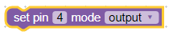
    <p>Declare a variable name ledOn to save the current status of led. If ledOn is True, the led is currently on and if ledOn
        is False, the led is off. We will reverse this value every 1 second.</p>
    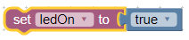
    <p>Create a timer to run every 1 second to flip the variable.</p>
    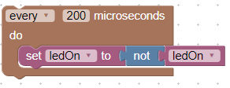
    <p>And turn on or off the led accordingly based on value of variable ledOn</p>
    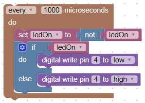
    <p>The code below connects pin 4 to GND to complete the electronic circuit (since other led is already connected to power)
        so led will be turned on.</p>
    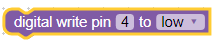
    <p>To turn it off, provide power to pin 4 with below block and the circuit will not be completed</p>
    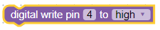
    <p>Select your Blocky from devices list and click Upload, wait for few seconds for the device to restart and take action,
        you will see the blue built in led blinks every second.</p>
    <p>Below is the full code blocks for this tutorial:</p>
    
</script>

<!-- Template for button example -->
<script type="text/ng-template" id="button.html">
    <p>Push buttons or switches connect two points in a circuit when you press them. This example turns on the built-in LED
        on pin 4 when you press the button.</p>
    <h5>Hardware Required</h5>
    <ul>
        <li>Blocky</li>
        <li>Push button module</li>
    </ul>
    <h5>How It Works</h5>
    <p>Plugin the push button module to any slot that has digital pin (D5, D6, or D7). We will use D5 in this example.</p>
    <p>When the push button is open (unpressed), there is no connection between the two legs of the pushbutton, so the pin 5
        is connected to ground (through the pull-down resistor on this module) and we read a LOW. When the button is closed
        (pressed), it makes a connection between its two legs, connecting the pin 5 to power supply (VCC), so that we read
        a HIGH.</p>
    <p>Based on the value read, we will turn on or off the built-in led.</p>
    <h5>Code</h5>
    <p>After you power up the Blocky and wait for it to be connected, go to Code Lab on Blocky website and build the code blocks
        below.
    </p>
    <p>The first thing you do is to initialize built in led pin (which is pin 4) as an output pin with the line.</p>
    
    <p>Initialize the push button pin (pin 5) as interrupt mode. Interrupt mode is mode that we can capture event when the pin
        value changes like when it goes high (UP) or low (DOWN).</p>
    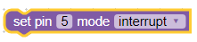
    <p>Declare a variable name ledOn to save the current status of led. If ledOn is True, the led is currently on and if ledOn
        is False, the led is off. We will reverse this value every time when button is pressed.</p>
    
    <p>Use this block to capture the event when the pin 5 goes UP (button is pressed), and we flip the value of variable ledOn
        and turn on or off the led accordingly.</p>
    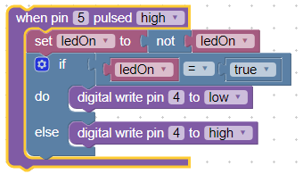
    <p>Select your Blocky from devices list and click Upload, wait for few seconds for the device to restart and connected.
        Press button, you will see the blue built in led is on and it goes off once you release the button.</p>
    <p>Below is the full code blocks for this tutorial:</p>
    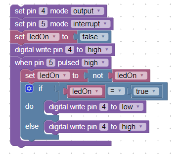
</script>

<!-- Template for relay example -->
<script type="text/ng-template" id="relay.html">
    <p>A relay is an electrically operated switch of mains voltage. It means that it can be turned on or off, letting the current
        go through or not.</p>
    <p>Controlling a relay with Blocky is as simple as controlling an output such as an LED.</p>
    <h5>Hardware Required</h5>
    <ul>
        <li>Blocky</li>
        <li>Relay module</li>
    </ul>
    <h5>How It Works</h5>
    <p>In relation to mains voltage, relays have 3 possible connections:</p>
    <ul>
        <li>COM: common pin</li>
        <li>NO (Normally Open): there is no contact between the common pin and the normally open pin. So, when you trigger the
            relay, it connects to the COM pin and supply is provided to a load</li>
        <li>NC (Normally Closed): there is contact between the common pin and the normally closed pin. There is always connection
            between the COM and NC pins, even when the relay is turned off. When you trigger the relay, the circuit is opened
            and there is no supply provided to a load.</li>
    </ul>
    <p>If you want to control a lamp for example, it is better to use a normally-open circuit, because we just want to light
        up the lamp occasionally.</p>
    <h5>Setup</h5>
    <p>Connect wire to relay module as below diagram and plug the module into any Blocky slot that has digital pin (D5, D6,
        or D7). We will use D5 in this example.</p>
    <h5>Code</h5>
    <p>After you power up the Blocky and wait for it to be connected, go to Code Lab on Blocky website and build the code blocks
        below.
    </p>
    <p>The first thing you do is to initialize relay pin (which is pin 5) as an output pin with the line.</p>
    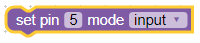
    <p>Declare a variable name ledOn to save the current status of relay. If relayOn is True, the relay is currently on and
        if relayOn is False, the relay is off. We will reverse this value every second.</p>
    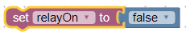
    <p>Create a timer to run every 1 second to flip the variable.</p>
    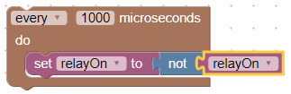
    <p>And turn on or off the relay accordingly based on value of variable relayOn</p>
    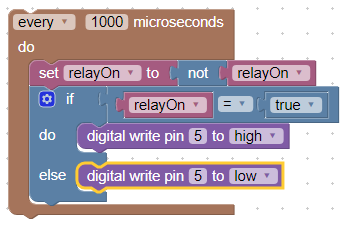
    <p>Select your Blocky from devices list and click Upload, wait for few seconds for the device to restart and take action,
        you will see the blue built in led blinks every second.</p>
    <p>Below is the full code blocks for this tutorial:</p>
    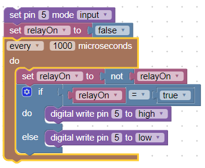
</script>

<!-- Template for analog read example -->
<script type="text/ng-template" id="analog-read.html">
    <p>Knowing if something is on or off can be extremely useful, but often you will want to know more. How bright is the light?
        How fast is the satellite moving? These types of answers are often analog – they cover a large range of values, not
        just on or off.</p>
    <p>Blocky handles analog input with 1 dedicated pin, labeled A0. This pin has access to an analog-to-digital converter,
        which takes the range of input values and creates a digital version by cutting up the range into tiny pieces. All
        this is handled behind the scenes – all you have to do is use some very simple functions and you will get what you
        need.
    </p>
    <p>In this example, we will use light sensor to detect the intensity of light or darkness. This can be applied in turning
        on or off light automatically.</p>
    <h5>Hardware Required</h5>
    <ul>
        <li>Blocky</li>
        <li>LDR light sensor module</li>
    </ul>
    <h5>How It Works</h5>
    <p>The LDR (Light Dependent Resistor) light sensor module is a special type of resistor which allows higher voltages to
        pass through it (low resistance) whenever there is a high intensity of light, and passes a low voltage (high resistance)
        whenever it is dark. We can take advantage of this LDR property and use it in our DIY Arduino LDR sensor project.</p>
    <p>The LDR (Light Dependent Resistor) light sensor module gives out an analog voltage according to the input light intensity
        on it. That is, the greater the intensity of light, the greater the corresponding voltage from the LDR will be. With
        Blocky built-in ADC (Analog to Digital Converter), the analog voltage (from 0-3.3V) is converted into a digital value
        in the range of (0-1023). When there is sufficient light in its environment or on its surface, the converted digital
        values read from the LDR through the Blocky will be in the range of 800-1023.</p>
    <h5>Setup</h5>
    <p>Plug the LDR light sensor module into A0 slot of Blocky.</p>
    <h5>Code</h5>
    <p>After you power up the Blocky and wait for it to be connected, go to Code Lab on Blocky website and build the code blocks
        below.
    </p>
    <p>The first thing you do is to initialize relay pin (which is pin 5) as an output pin with the line.</p>
    
    <p>Declare a variable name ledOn to save the current status of relay. If relayOn is True, the relay is currently on and
        if relayOn is False, the relay is off. We will reverse this value every second.</p>
    
    <p>Create a timer to run every 1 second to flip the variable.</p>
    
    <p>And turn on or off the relay accordingly based on value of variable relayOn</p>
    
    <p>Select your Blocky from devices list and click Upload, wait for few seconds for the device to restart and take action,
        you will see the blue built in led blinks every second.</p>
    <p>Below is the full code blocks for this tutorial:</p>
    
</script>